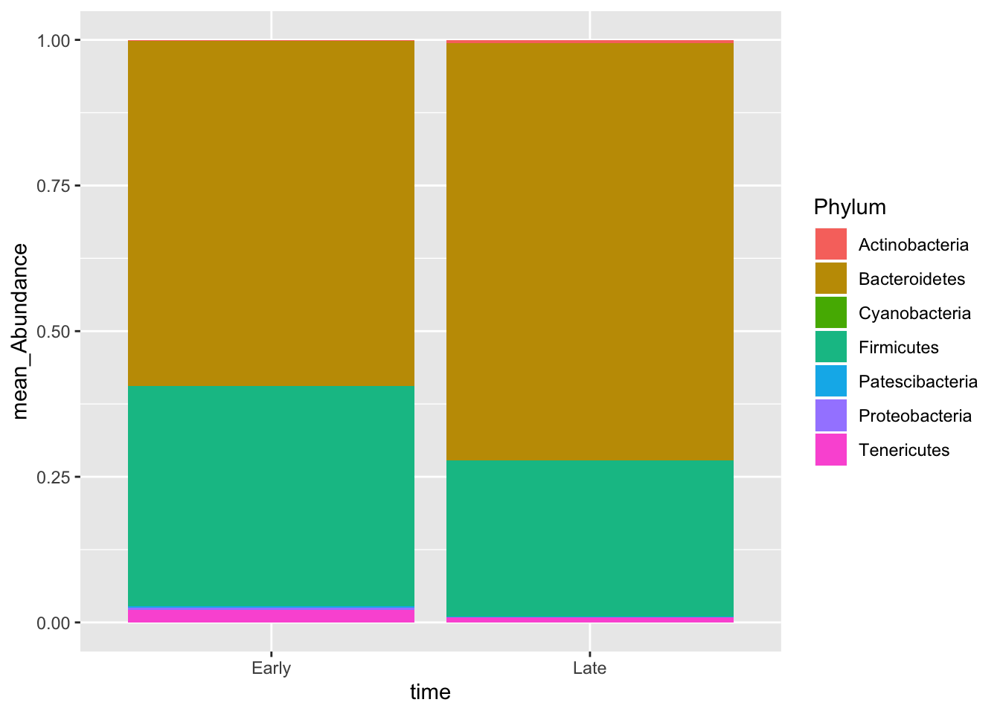

3 Day Two
3.1 Main concepts to be discussed:
- Finish dada2 pipeline
- Assign Taxonomy
- Intro to Phyolseq package
- Create a Phylum level bar plots
- Alpha diversity plots
- Beta diversity plots
Once we are finished using the dada2 package, we will have a sequence table and taxonomy table.
Lets look at the metadata files we have to get more information about these samples.
##
## Attaching package: 'dplyr'## The following objects are masked from 'package:stats':
##
## filter, lag## The following objects are masked from 'package:base':
##
## intersect, setdiff, setequal, uniontime_info<-read.delim("~/projects/16sanalysis_workshop/workshoptutorial/MiSeq_SOP/mouse.time.design",sep = "\t")
dpw_info<-read.delim("~/projects/16sanalysis_workshop/workshoptutorial/MiSeq_SOP/mouse.dpw.metadata",sep = "\t")
sample_info<-left_join(time_info,dpw_info,by="group")
rownames(sample_info)<- sample_info$group
sample_info## group time dpw
## F3D0 F3D0 Early 0
## F3D1 F3D1 Early 1
## F3D141 F3D141 Late 141
## F3D142 F3D142 Late 142
## F3D143 F3D143 Late 143
## F3D144 F3D144 Late 144
## F3D145 F3D145 Late 145
## F3D146 F3D146 Late 146
## F3D147 F3D147 Late 147
## F3D148 F3D148 Late 148
## F3D149 F3D149 Late 149
## F3D150 F3D150 Late 150
## F3D2 F3D2 Early 2
## F3D3 F3D3 Early 3
## F3D5 F3D5 Early 5
## F3D6 F3D6 Early 6
## F3D7 F3D7 Early 7
## F3D8 F3D8 Early 8
## F3D9 F3D9 Early 9Lets make a phyloseq object
Now that we have sample_info lets try to make a phyloseq object out of this
library(phyloseq)
taxa<-readRDS("~/projects/16sanalysis_workshop/workshoptutorial/output/taxa.rds")
seq<-readRDS("~/projects/16sanalysis_workshop/workshoptutorial/output/seq.rds")
ps <- phyloseq(otu_table(seq,taxa_are_rows = F),
sample_data(sample_info),
tax_table(taxa))
ps## phyloseq-class experiment-level object
## otu_table() OTU Table: [ 234 taxa and 19 samples ]
## sample_data() Sample Data: [ 19 samples by 3 sample variables ]
## tax_table() Taxonomy Table: [ 234 taxa by 7 taxonomic ranks ]You can see that this object has an OTU table(ASV table), sample data and tax_table. You can use functions tax_table(), sample_data() and otu_table() to access the data.
Take a look at:
- subset_samples()
- subset_taxa()
- tax_glom()
- sample_sums()
- prune_samples()
- transform_sample_counts()
- psmelt()
ps2<-tax_glom(ps,taxrank = "Phylum")
ps2 = transform_sample_counts(ps2, function(x) x/sum(x))
pmelt<-psmelt(ps2) %>% arrange(desc(Abundance))
cutoff<-0.005
pmelt_filt<-pmelt %>% group_by(Phylum,time) %>% filter(sum(Abundance) >cutoff)
ggplot(pmelt_filt,aes(x=Sample,y=Abundance,color=Phylum,fill=Phylum)) +geom_bar(stat = "identity")
pmelt_filt %>% group_by(time,Phylum) %>% summarise(mean_Abundance=mean(Abundance)) %>% ggplot(.,aes(x=time,y=mean_Abundance,fill=Phylum)) +geom_bar(stat="identity")
Figure out how to change the colors to custom colors!!
## # A tibble: 12 x 3
## # Groups: time [2]
## time Phylum mean
## <fct> <fct> <dbl>
## 1 Early Actinobacteria 0.00133
## 2 Early Bacteroidetes 0.592
## 3 Early Cyanobacteria 0.000594
## 4 Early Firmicutes 0.378
## 5 Early Patescibacteria 0.00285
## 6 Early Proteobacteria 0.00331
## 7 Early Tenericutes 0.0218
## 8 Late Actinobacteria 0.00472
## 9 Late Bacteroidetes 0.716
## 10 Late Firmicutes 0.269
## 11 Late Patescibacteria 0.000993
## 12 Late Tenericutes 0.008453.2 Alpha & beta Diversity